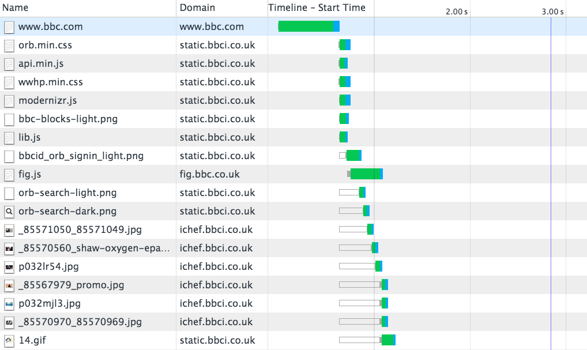
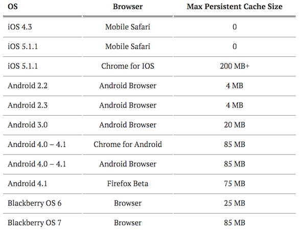
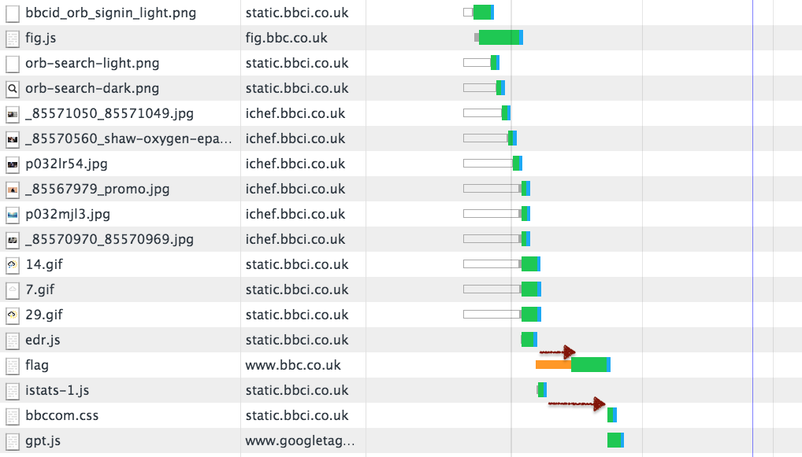
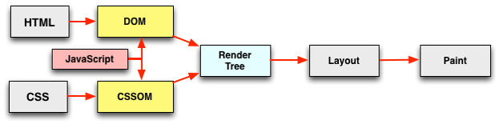
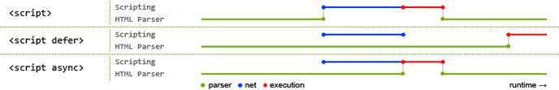

HTML5를 활용한
Front-End 성능 개선
Front-End 성능 개선
Created by 손찬욱 / chanuk.son
성능 이란 무엇인가?
로딩 속도와 인터렉션 속도
로딩 과정의 이해
Front End 성능 개선이란?
= Waterfall chart를 어떻게 개선할 것인가?
요청 수 최소화 하기
Waterfall chart의 높이 줄이기

HTTP Request 수를 줄이자
왜?
HTTP Request 수가 많으면 느린가?
NETWORK COST
DNS Lookup, Connection, Server time, Download, ...
3G 접속일 경우, 특히 connection에 대한 비용이 많이 발생함
HTTP 구성에 따른 전송량의 증가
HTTP Header, Cookie
DOMAIN 당 연결할 수 있는
CONNECTION 수가 정해져 있음

Browserscope : http://goo.gl/ZhFwaF
HOW TO?
- 자원의 Merge
- 불필요한 자원의 제거
- 자원의 재사용
JS, CSS의 Merge (Demo)
Grunt, gulp와 같은 자동화 툴을 이용한 자동 merge
IMAGE의 Merge (CSS Sprite)
IMAGE의 Merge (CSS Sprite)
background-image/position을 이용한 CSS Sprite
#nav li a { background-image:url("image_nav.gif"); }
#nav li a.item1 { background-position: 0px 0px; }
#nav li a.item2 { background-position: -72px 0px; }
#nav li a.item3 { background-position: -144px 0px; }
HTML5를 이용한 요청수 줄이기
IMAGE 제거 (CSS3 Effect)

6KBytes 이미지
IMAGE 제거 (CSS3 Effect)
- gradient, box-shadow
- border-radius
- :before
- :after, gradient

IMAGE 제거 (CSS3 Effect)
.docIcon {
background:#eee;
background:-webkit-linear-gradient(top, #ddd 0, #eee 15%, #fff 40%, #fff 70%, #eee 100%);
border:1px solid #ccc;
border-radius:3px 15px 3px 3px;
box-shadow:inset rgba(255,255,255,0.8) 0 1px 1px;
display:block;
width:40px;
height:56px;
position:relative;
text-indent:-9999em;
margin:42px auto;
}
.docIcon:before {
content:"";
display:block;
position:absolute;
top:0;
right:0;
width:15px;
height:15px;
background:#ccc;
background:-webkit-linear-gradient(45deg, #fff 0, #eee 50%, #ccc 100%);
box-shadow:rgba(0,0,0,0.05) -1px 1px 1px, inset white 0 0 1px;
border-bottom:1px solid #ccc;
border-left:1px solid #ccc;
border-radius:0 14px 0 0;
}
.docIcon:after {
content:"";
display:block;
position:absolute;
left:0;
top:0;
width:60%;
margin:22px 20% 0;
background:#ccc;
background:-webkit-linear-gradient(top, #ccc 0, #ccc 20%, #fff 20%, #fff 40%, #ccc 40%, #ccc 60%, #fff 60%, #fff 80%, #ccc 80%, #ccc 100%);
height:15px;
}
1KBytes CSS3 Effect
goo.gl/MHCbpACSS BUTTON
http://www.bestcssbuttongenerator.com
CSS ICON
http://tympanus.net/Development/IconHoverEffects/
LocalStorage 이용한 성능 개선
LocalStorage
브라우저 캐시는 제한이 있다.
limit를 초과한 경우, 기존 캐싱 자원이 삭제됨
http://www.guypo.com goo.gl/tl7bJm
LocalStorage는 페이지 캐싱보다 빠르다
Smartphone Browser localStorage is up to 5x Faster than Native Cache

http://www.mobify.com http://goo.gl/xqJPR2
JS,CSS의 LocalStorage를 이용한 캐싱
자주 변경이 되지 않는 파일에 대해서는 localStorage를 이용해 확실하게 캐싱되도록 처리
요청 크기 최소화 하기
Waterfall chart의 폭 줄이기

HTTP Request 양을 줄이자
HOW TO?
- 자원의 크기를 최소화
Minify와 Obfuscation
function isHWAccelerable() {
var result = false;
var agent = this.agent();
var osVersion = agent.os.version;
var browser = agent.browser.name;
var browserVersion = agent.browser.version;
var useragent;
// chrome (less then 25) has a text blur bug.
// but samsung sbrowser fix it.
if (browser.indexOf("chrome") !== -1) {
result = browserVersion >= "25";
} else if (/ie|firefox|safari|inapp/.test(browser)) {
result = true;
} else if (agent.os.name.indexOf("android") !== -1) {
useragent = (ua.match(/\(.*\)/) || [null])[0];
// android 4.1+ blacklist
// EK-GN120 : Galaxy Camera, SM-G386F : Galaxy Core LTE
// SHW-M420 : Galaxy Nexus , SHW-M200 : NexusS , GT-S7562 : Galaxy S duos
result = (osVersion >= "4.1.0" && !/EK-GN120|SM-G386F/.test(useragent)) ||
(osVersion >= "4.0.3" &&
/SHW-|SHV-|GT-|SCH-|SGH-|SPH-|LG-F160|LG-F100|LG-F180|LG-F200|EK-|IM-A|LG-F240|LG-F260/.test(useragent) && !/SHW-M420|SHW-M200|GT-S7562/.test(useragent));
}
return resultCache(this, "isHWAccelerable", [result, agent], result);
}
1,000 Bytes
Minify와 Obfuscation
주석제거, 공백 제거 (687 Bytes)
function isHWAccelerable(){var result=false;var agent=this.agent();var osVersion=agent.os.version;var browser=agent.browser.name;var browserVersion=agent.browser.version;var useragent;if(browser.indexOf("chrome")!==-1){result=browserVersion>="25";}else if(/ie|firefox|safari|inapp/.test(browser)){result=true;}else if(agent.os.name.indexOf("android")!==-1){useragent=(ua.match(/\(.*\)/)||[null])[0];result=(osVersion>="4.1.0"&&!/EK-GN120|SM-G386F/.test(useragent))||(osVersion>="4.0.3"&&/SHW-|SHV-|GT-|SCH-|SGH-|SPH-|LG-F160|LG-F100|LG-F180|LG-F200|EK-|IM-A|LG-F240|LG-F260/.test(useragent)&&!/SHW-M420|SHW-M200|GT-S7562/.test(useragent));}
return resultCache(this,"isHWAccelerable",[result,agent],result);}
변수명 난독화 (491 Bytes)
function isHWAccelerable(){var e,r=!1,s=this.agent(),t=s.os.version,i=s.browser.name,a=s.browser.version;return-1!==i.indexOf("chrome")?r=a>="25":/ie|firefox|safari|inapp/.test(i)?r=!0:-1!==s.os.name.indexOf("android")&&(e=(ua.match(/\(.*\)/)||[null])[0],r=t>="4.1.0"&&!/EK-GN120|SM-G386F/.test(e)||t>="4.0.3"&&/SHW-|SHV-|GT-|SCH-|SGH-|SPH-|LG-F160|LG-F100|LG-F180|LG-F200|EK-|IM-A|LG-F240|LG-F260/.test(e)&&!/SHW-M420|SHW-M200|GT-S7562/.test(e)),resultCache(this,"isHWAccelerable",[r,s],r)}
50.9% 감소
Minify와 Obfuscation (Demo)
Grunt, gulp와 같은 자동화 툴을 이용한
HTML, CSS minified와 JS minified,obfuscation
이미지 크기 줄이기
이미지의 크기를 결정하는 요인
- 이미지의 포맷
- 이미지의 사이즈
이미지 포맷
이미지의 크기를 결정하는 요인
 svgopen.org : http://goo.gl/cwTZ6h
svgopen.org : http://goo.gl/cwTZ6h- PNG : png-8, png-24에 따라 용량 차이가 남.
- JPEG : 압축률 70~90%에 따라, 용량이 작아짐
* 용량이 작은 WebP 포맷은 Chrome, Android 4.1+ 만 지원
이미지 포맷 기준

developers.google.com : http://goo.gl/IeQuI3
이미지 사이즈
사이즈가 크면 클수록 용량은 배로 증가
Pixel 수(width * height) * 표현할 수 있는 컬러 수
고해상도 (레티나) 대응을 위해,
실제 표현하는 사이즈 보다
2배 이상으로 사이즈 조정
HTML5를 이용한 반응형 이미지
srcset을 이용

화면의 pixel ratio에 맞는 이미지를 사용
picture를 이용

화면의 회전상태에 따라, 화면의 pixel ratio에 맞는 이미지를 사용
랜더링 빠르게 하기
Waterfall chart의 간격 줄이기
브라우저 랜더링 과정
TTFB (Time To First Bytes) 이후, 병렬로 랜더링을 한다.
자원의 위치에 따른 랜더링
적절한 자원의 위치 선정
- 시각적으로 빠른 화면을 제공하기 위해, head에는 꼭 레이아웃 구성에 꼭 필요한 CSS 파일만 넣는다.
- BODY 태그 안에서는 CSS나 Script를 넣지 않는다. 전체 랜더링이 잠시 중단된다
- Script는 body 태그 닫기 전에 넣는다.
First Paint Time
초기 화면에 무엇인가 되도록 빠른 시점에 출력되도록 하면 체감적인 속도향상을 느끼게 할 수 있다.

스크립트는 다양한 작업을 수행하는 코드로 이루어져 있고, DOM을 변경하는 작업들이 포함되어 있을 수 있기 때문에, 블록 된다.
document.write("paused HTML parsing");
HTML5를 이용한 스크립트 로딩
async를 이용
스크립트를 실행할 때만, HTML 파싱이 중단
defer를 이용
HTML 파싱이 완료된 이후에, 스크립트를 실행
async와 defer의 적절한 사용
DOM 제어와 관련이 없는 스크립트는 async를 사용
DOM 제어와 관련이 있는 스크립트는 defer를 사용